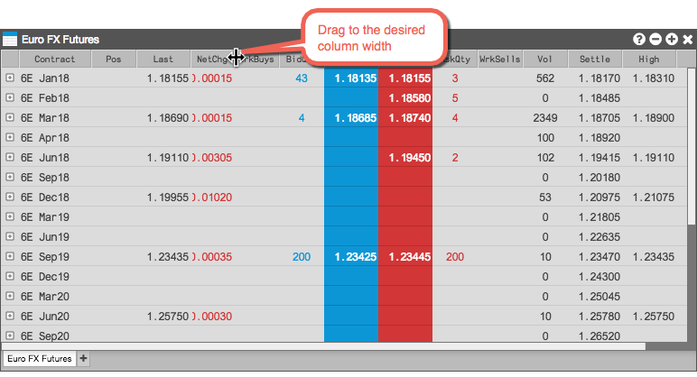
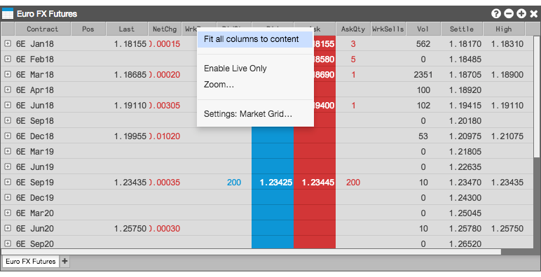
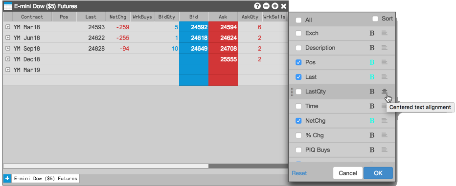
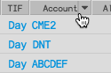
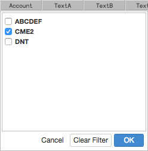
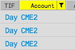
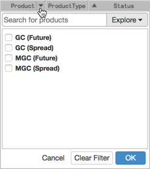
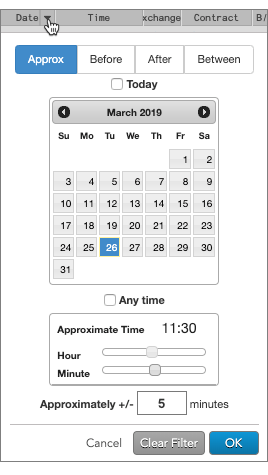

Many of the widgets, such as Fills and Audit Trail, include information displayed in a grid with rows and columns. You can customize the look and contents of these grids by configuring their:
Resizing column widths
When opening the widget, the default column widths might be too narrow to display all of their content. You can manually resize a single column by dragging a column separater bar, as shown.

You can also change the width of all columns in the widget so that each column is wide enough to show its full value. To resize all column widths to fit the data:
-
Right-click on any column heading to display the column heading context menu.

-
Select Fit all columns to content.
All of the column widths in the widget change to fit the widest value in their respective columns. Some of the right-most columns might no longer be visible, but you an resize the widget manually, as desired.
Choosing columns, bold settings, and text alignment
You can choose which columns you want to display in a grid-based widget's Settings, or you can use the context menu from the widget's column headings. You can also set the bold font and text alignment for
each column.
Note: If the widget level bold setting is enabled, the column-level bold option is not available.
To configure the columns you want to show:
-
Click the right-mouse button in the title of a column and select Edit columns from the context menu.
The available columns dialog appears.

-
Select the columns you want to display.
- To set bold font for a column, click
 next to a column in the context menu. When bold is active for a column, the button will be highlighted (
next to a column in the context menu. When bold is active for a column, the button will be highlighted ( ).
).
-
To set the text alignment for a column, click
 to the right of the column name to cycle through the left, centered, and right text alignment settings. You can also adjust the arrangement of your columns by clicking and dragging each column name.
to the right of the column name to cycle through the left, centered, and right text alignment settings. You can also adjust the arrangement of your columns by clicking and dragging each column name.
-
Click OK
Filtering the data displayed in a grid-based widget
If a column is filterable, a drop-down arrow appears when you hover on the column header.

To filter the column, click the arrow to select one or more values and click OK.

When a column is filtered, the column header is highlighted and the filter icon is displayed. To clear a filter, click the icon and select Clear Filter.

When filtering the Product column, you have the option to use Search or Market Explorer to select products. The product type is displayed in parentheses next to each product in the list.

When filtering the Date or Time column, you can specify a date or date range and a time or time range. The changes you make set the filtering criteria for both columns. You can use the following modifiers for more precise filtering:
-
Approx: Filters based on a single date and for a number of minutes around a specified time.
-
Before: Filters based on a single date before a specified time.
-
After: Filters based on a single date after a specified time.
-
Between: Filters based on a range from a specific date and time to a specific date and time.
